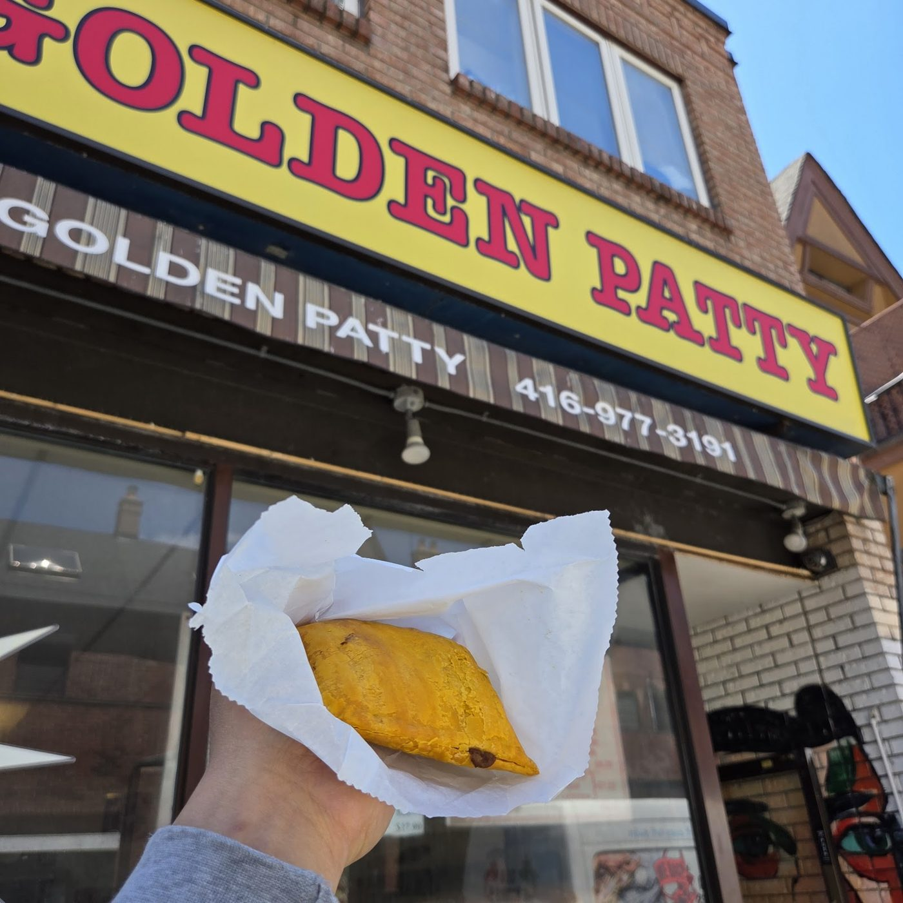

Kensington Market · Baldwin Street
Jamaican patties on Baldwin Street.
Golden Patty is at 187 Baldwin St in Kensington Market, Toronto. Google lists it as a bakery. The shop’s own sign and awning read Golden Patty and show the phone number (416) 977-3191. Reviewers write about thin, flavourful patties and soft coco bread.
- Jamaican bakery
- 4.4 from 635 Google reviews
- Kensington Market
- Takeout
What’s in the shop
Jamaican patties
Christen’s Google review mentions beef, jerk chicken, shrimp and goat patties. Barry Kung writes about spicy beef, jerk chicken and goat, and calls them “thin patties, but loaded with flavor.” Listing photos show patties at the window and packed in boxes.
Coco bread and cakes
Christen writes that the coco bread is “always fresh and soft,” and that she also loves the mango cake. Listing photos show patties served in coco bread.
A West Indian counter
The shop’s Facebook page, read Nov 27, 2026, lists jerk chicken, curry chicken, ackee and saltfish, oxtail, Jamaican patties, Trinidadian doubles, spice buns, coconut drops and tamarind balls. The shop’s own window, in Google listing photos, also describes a Jamaican bakery and West Indian food, including doubles. Those window photos are not in the gallery because they include prices.
These details come from the shop’s public Google listing and listing photos (read and downloaded Nov 27, 2026), from its Facebook about text, and from the reviews quoted below. This page does not list prices.
A patty shop in Kensington Market
The bakery is at 187 Baldwin St, in Kensington Market. Google lists no website of the shop’s own. You can also find the shop on Facebook, as Golden Patty Bakery.
Google’s listing, checked Nov 27, 2026, rates the bakery 4.4 from 635 reviews and shows takeout. The listing is unclaimed, and hours on other websites do not all match Google’s, so it is worth calling ahead.
What customers say
4.4 ★ from 635 Google reviews (checked Nov 27, 2026). Quotes are word for word. Each one says where it was read: on the Google listing itself, or on a public page that copies reviews.
★★★★
Their patties are tasty, I just wish they had more filling. I've tried the beef, jerk chicken, shrimp and goat patties. The cocobread is my favourite part - always fresh and soft. I alsso love their mango cake, and always ask for a corner piece. Prices are really decent, the service is pretty fast, and they do get busy.
★★★★★
I'm back again for more patties. Got 6 spicy beef, 4 jerk chicken and 2 goat. Got them cold to bring home and heat them up in the oven.
It's my first time here. Got 3 jerk chicken patty to go. Thin patties, but loaded with flavor! I wished I would got a few other flavors, like goat, jerk pork, spicy beef or callaloo. I will be back for this fantastic cheap eats. You got to eat here 😋 have a look at my pictures and press the like button!
From the bakery
Real photos from the bakery’s public Google listing, downloaded Nov 27, 2026. Photos that show priced window menus, wall boards or case tags are not included. Tap to enlarge.
Visit Golden Patty
187 Baldwin St
Toronto, ON M5T 1L8
Kensington Market
| Monday | 8 a.m.–6 p.m. |
|---|---|
| Tuesday | 8 a.m.–6 p.m. |
| Wednesday | 8 a.m.–6 p.m. |
| Thursday | 8 a.m.–6 p.m. |
| Friday | 8 a.m.–6 p.m. |
| Saturday | 8 a.m.–6 p.m. |
| Sunday | 8 a.m.–6 p.m. |
These hours are from the shop’s Google listing, read Nov 27, 2026: 8 a.m.–6 p.m. every day. That morning, a Friday, the listing showed “Open · Closes 6 p.m.” Yellow Pages lists 9 a.m.–7 p.m. most days and Friday until 7:30 p.m.; TorontoDine lists a different mix, including a Sunday 10 a.m. opening. Google’s listing is marked “Claim this business,” so those hours may not be kept current by the shop. Please call (416) 977-3191 to confirm before you visit.